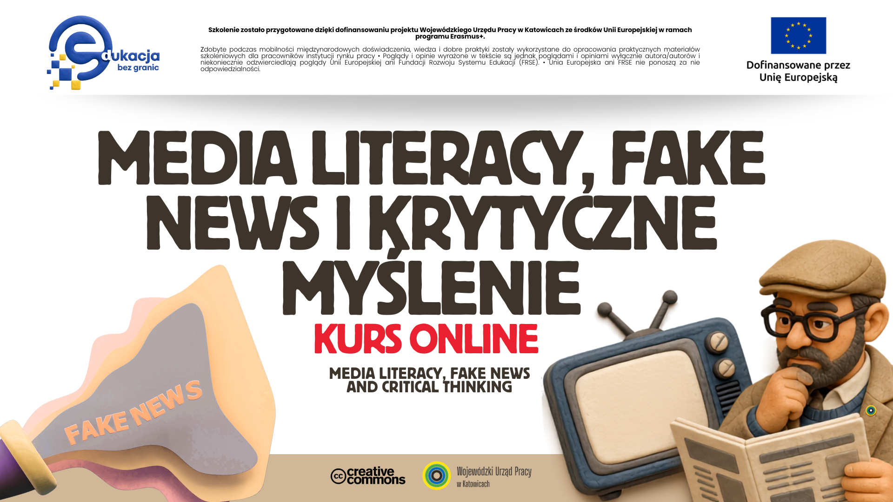

Kurs online: Wystąpienia publiczne i storytelling
Wkrótce

Jedna alarmująca treść potrafi uruchomić emocję szybciej niż analizę. Ten kurs prowadzi od rozpoznania mechanizmu manipulacji przez weryfikację źródeł i dowodów aż do odpowiedzialnej reakcji.
Otwórz kurs online